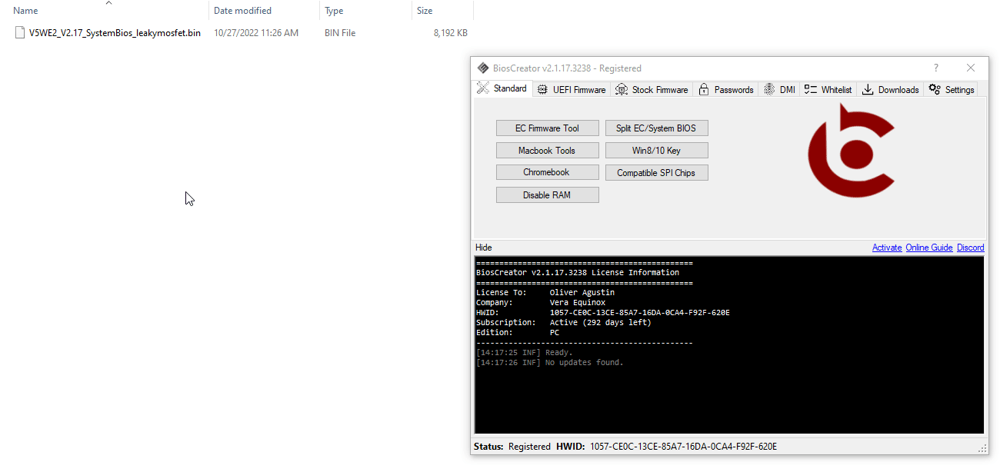

<style>
    .center {
        display: block;
        margin-left: auto;
        margin-right: auto;
        width: 50%;
      }

    a {
      text-decoration: none;
      display: inline-block;
      padding: 8px 16px;
    }
    
    a:hover {
      background-color: #ddd;
      color: black;
    }
    
    .previous {
      background-color: #f1f1f1;
      color: black;
    }
    
    .next {
      background-color: #160042;
      color: white;
    }
    </style>

<section class="support section bg-gray">
	<div class="container">
    <div class="container" style="text-align:justify; margin-bottom:50px;">
      <h4 class="join">How automatically download Lenovo BIOS Updates?</h4>
      <ol>
        <li>Drag your backup firmware to BiosCreator <b>(Stock Firmware -> Lenovo)</b>.</li>
        <li>A version number must be detected.</li>
        <li>When the <b>Download</b> button becomes enabled, click it.</li>
        <li>If the firmware update is found, the Lenovo Bios Update file will be available in the same folder where the backup firmware is located.</li>
      </ol>
      <br>
    
      <h2><b>Example:</b></h2>
      
      <br>

      <a href="{{ site.baseurl }}/faq/spi-compatible-chips" class="previous">&laquo; Previous</a>
      <a href="{{ site.baseurl }}/faq/disable-ram" class="next">Next &raquo;</a>

		</div> <!-- End row -->
	</div> <!-- End container -->
</section> <!-- End section -->